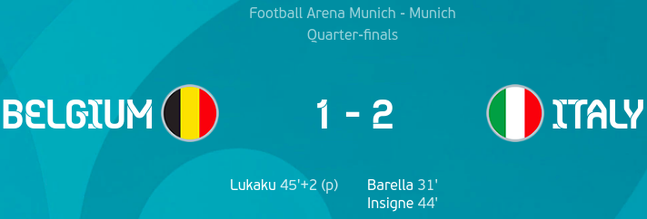

Day 22
Switzerland v Spain
Penalty shootout
Busquets(SPA) (0-0)
Gavranovic(SWI) (1-0)
Olmo(SPA) (1-1)
Schar(SWI) (1-1)
Rodri(SPA) (1-1)
Akanji(SWI) (1-1)
Moreno(SPA) (1-2)
Vargas(SWI) (1-2)
Oyarzabal(SPA) (1-3)
A great performance from the Swiss but not enough in the end as they lost in their second penalty shootout after their Round of 16 clash against France. Spain took the lead when a corner was met by Jordi Alba and his shot took a huge deflection from Zakaria(coming in for Xhaka), wrong footing Sommer to score. In the end, it was deemed as an own goal which is now the 10th in the competition and is now more than the own goals scored in the previous 15 competitions combined(9). Spain couldn’t later get past the Swiss defence. The Swiss didn’t back down as well and managed to get the equaliser after a mix up with Laporte and Torres gave the ball away and was teed up for Shaqiri. Later however, a Swiss player was sent off for a bit of a high challenge which was a bit controversial. The Swiss held on with some clever tactics through the 90 and extra time to send the game to a penalty shootout. Busquets put Spain on the backfoot by striking his penalty against the bar. Schar and Akanji’s penalties were saved by Unai Simon. Rodri’s penalty was saved by Sommer. Vargas however blazed it over and Oyarzabal sealed the deal for Spain.
Belgium v Italy

Brilliant showing from Italy. They will now face Spain in what is a thrilling match up(Euro 2012 final vibes). Both teams had their share of chances. Italy did score first from Bonucci but was overturned with VAR due to offside. Italy did take the lead from a great goal from Barella who dribbled it well before burying the shot past Courtois. Later Insigne doubled the lead with an absolute beauty of a curler after being given way too much space. Belgium got a lifeline when Doku was fouled by Di Lorenzo. Lukaku slotted away the penalty. The second half was fairly even again with both teams creating chances at both ends. Belgium could’ve scored but Lukaku didn’t expect the ball that quickly and messed up.
Semifinal 1
- Italy v Spain